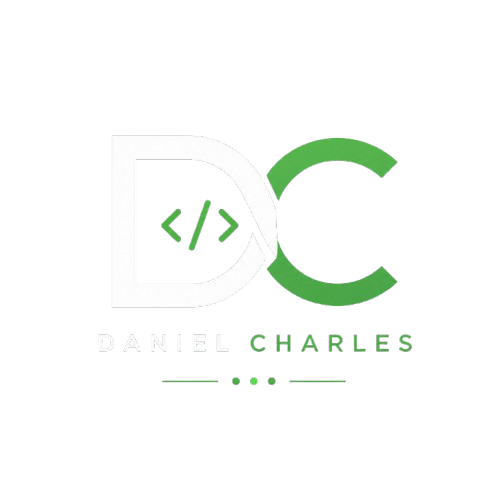

Final Year IT Student
Bringing a calm and methodical approach to problem solving.
Let's Connect View my Resume

Bringing a calm and methodical approach to problem solving.
Let's Connect View my Resume
Learn more about who I am, what motivates me, and the areas I'm passionate about.
I am currently a final-year Information Technology student with a passion for software development, artificial intelligence, and solving real-world problems through technology.
I enjoy designing software that is efficient, scalable, and easy to use. My interests include machine learning, system analysis, and finding efficient ways to analyse data.
Outside of programming, I am an avid gamer who tries to peak behind the curtains to figure out how things work and interact (sometimes even down to the kernel level). I am fascinated with understanding how things work and often spend large amounts of my time watching videos on random topics.
BSc Information Technology (current)
5+ Personal Software Projects.
Proficient in 7 Programming Languages.
2+ Years in Web Design.
Company Lead on All HubSpot-related projects.
AI, Data Analytics & Software Engineering
Potchefstroom, South Africa
Showing 8 projects
Description
Built an AI chess engine using Minimax with Alpha-Beta pruning.
Key Features
• Intelligent move evaluation using recursion.
• Checkmate detection.
• Adjustable search depth.
Description
Collaborated with other students to create a full system to solve the problem of hostels tracking donations and projects.
Key Features
• Full database integration.
• Stunning GUI.
• Scalable.
Description
Builds on an existing mod that slows down time when aimiing down the scope.
Key Features
• Modifies existing game files.
• Implemented through PythonSDK which is open-source.
• Changes weapon skin randomly whenever the aim down sight keybind is pressed.
Description
Built a GUI-enabled questionnaire game that uses Python's Turtle library to implement an interactive experience.
Key Features
• Interactive interface.
• Questions are implemented using dictionaries for improved performance.
Description
Adapted my previous questionnaire game into C++ and enabled the option to easily change the questions asked.
Key Features
• Completely customizeable.
• Makes use of vector arrays.
Description
A project built while following DeepLearning.AI's "Supervised Machine Learning: Regression and Classificaton" course.
Key Features
• Data visualization.
• Multiple input variables.
• Uses Scikit Learn.
Description
A project built while following DeepLearning.AI's "Supervised Machine Learning: Regression and Classificaton" course.
Key Features
• Regression calculated manually without using any libraries.
Description
Built as an ongoing project while I mastered the Python module offered at NWU.
Key Features
• Scaled with my knowledge.
• Went from a basic math program to including dictionaries, functions, and more as I progressed.
Description
Uses PIL to alter images placed within a specific folder.
Key Features
• Improves both the contrast and sharpens images.
• Works on multiple file types.
Java
Python
C#
C++
HTML
CSS
JavaScript
SQL
Oracle
MySQL
SQL Developer
Figma
Prototyping
Professional certifications and completed courses that continue to expand my technical knowledge.
Developed practical skills in Python programming and applied them to artificial intelligence concepts, including data manipulation, automation, machine learning fundamentals, and building AI-powered applications using modern Python libraries and best practices.
Strengthened Python programming skills through advanced topics including object-oriented programming, modules, file handling, exception management, decorators, iterators, and working with Python's standard libraries.
Learned Python programming fundamentals, including variables, data types, functions, loops, conditionals, collections, and writing clean, readable code to solve practical programming problems.
Successfully completed a professional course covering SQL fundamentals.
Expanded core Java knowledge by exploring object-oriented programming, collections, exception handling, file input/output, generics, and advanced programming concepts used in developing scalable Java applications.
Learned the fundamentals of Java programming, including variables, data types, operators, control structures, methods, object-oriented principles, and writing structured console applications.
Built a strong understanding of C# programming by learning syntax, classes, methods, inheritance, collections, exception handling, and the principles of object-oriented software development.
Gained a foundation in C++ programming through topics including variables, functions, loops, conditional statements, object-oriented programming, pointers, and memory management fundamentals.
Demonstrated proficiency in using Confluence to create, organise, and collaborate on documentation, manage team knowledge, structure workspaces, and improve collaboration through shared content and documentation best practices.
Learned to manage projects effectively using Jira by creating and tracking issues, planning work with boards, managing workflows, assigning tasks, and supporting Agile project management practices.
Learned how to use Slack Analytics to measure workspace engagement, monitor communication trends, evaluate adoption metrics, and use data-driven insights to improve team collaboration and productivity.
Explored project management workflows within Slack, including task organisation, workflow automation, collaboration using channels, integrations with productivity tools, and keeping teams aligned throughout project lifecycles.
Developed best practices for professional communication in Slack by improving messaging etiquette, organising conversations, reducing information overload, and using productivity features to enhance effective team collaboration.
Learned how to successfully navigate Slack to enhance and streamline business communication.
Completed Google's comprehensive digital marketing programme covering search engine optimisation (SEO), search advertising (SEM), social media marketing, analytics, e-commerce, content strategy, email marketing, and online business growth.
Feedback from employers, colleagues and collaborators.
I had the privilege of witnessing Daniel Charles's remarkable journey at 1.3 Creative, where his blend of technical prowess and exceptional interpersonal skills left an indelible mark. Daniel joined our digital design agency and HubSpot Solution Partner with a basic understanding of IT, and within just over two years, he metamorphosed into our cornerstone for resolving complex technical challenges and mastering abstract concepts. His journey from a novice to an expert in critical technologies and methodologies is a testament to his dedication and capability. Daniel's technical acumen spans a broad array of platforms and tools, including but not limited to HubSpot, Confluence, Jira, Jira Service Management, WordPress, WooCommerce, Elementor, Google Sheets, and Slack. His expertise is not just theoretical; Daniel holds certifications in HubSpot, Google, Jira, Confluence, and Slack, which he applied with finesse to drive our projects to success. His role was pivotal in managing vast sections of our enterprise application stack, particularly distinguishing himself as the go-to expert for HubSpot-related endeavours. Beyond his technical skills, Daniel excelled in customer engagement, offering deep insights and guidance during the discovery phase with our clients, and demonstrating remarkable diligence and collaboration in the build phase. His ability to work harmoniously with colleagues under the Agile methodology significantly enhanced our project executions and outcomes. Daniel is not only a technically proficient professional but also a person of great character—polite, accommodating, punctual, and diligent. He communicates with clarity and purpose, embodying a consultative approach that combines attentive listening with insightful advice. His strong work ethic, reliability, and the respect he garnered from his peers made him an invaluable asset to our team. The significant void Daniel leaves in our organization speaks volumes of his impact. His contributions have been pivotal to our success, setting a high standard for excellence and teamwork. As we bid him farewell, we do so with best wishes for his future endeavours and with the hope of future collaboration. For any organization looking to enrich their team with a dedicated, innovative, and highly skilled professional who brings a wealth of technical expertise, customer-focused insights, and a proven track record of working effectively under Agile methodologies, Daniel Charles comes with my highest recommendation.

Live information pulled directly from my GitHub profile.
Repositories
Gists
Followers
Following